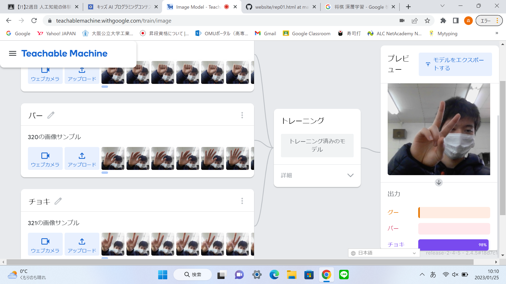

第2週目
2-1 １週目のレポートをHTMLで作る
１週目のレポート
1.内容
1週目のレポートの編集を少し行った。日付や自分のIDを編集して、見直しをした。
2.感想
とても簡単に編集できたので、時間があれば今度自分でもホームページを作成してみたいと思った。
2-2 機械学習体験

1.内容
ウェブカメラを使い、グーチョキパーを判別した。画像をそれぞれ300枚ずつ認識させ、判別するようにした。
手の形の向きを変えたり、少しあいまいな形にしてみたりして、色々な形のグーチョキパーを認識できるようにした。
2.感想
ウェブカメラで簡単に画像を認識させることができ、とても楽に機械学習を体験することができた。
しかし、パーを変な方向に見せるとチョキに反応するので、もっと改善の余地があると思った。
2-3 VR（バーチャルリアリティー：Virtual Reality）会議室の体験
1.内容
VRゴーグルを使い、VR体験をした。会議室に入り、白色や赤色のペンで、ホワイトボードに絵を描いた。
側面をダブルタップして、白黒の現実の視界とVRの視界を切り替えた。
2.感想
VRの視界の画質はとても美しく、もっと進歩すれば現実と変わらない画質になると思った。
ホワイトボードも現実に似た感覚で、絵を書けたのでとても面白かった。